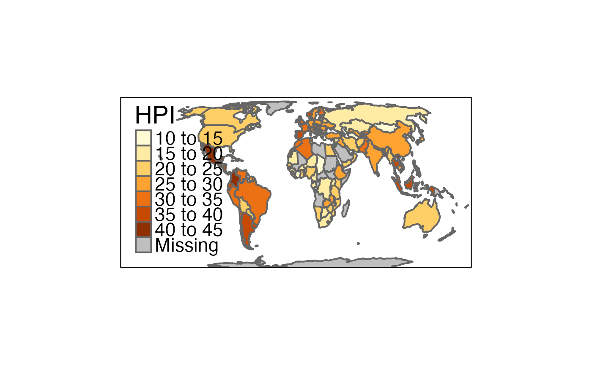

Format options are tmap options that are shape dependent. With tmap_format() the predefined formats can be retrieved. The values for a specific format can be retrieved with tmap_format(format), where format is the name of the format. The function tmap_format_add is used to add a format.
tmap_format(format) tmap_format_add(..., name)
| format | name of the format. Run |
|---|---|
| ... | options from |
| name | name of the new format. |
the function tmap_format() returns the names of the available formats. When format is defined, it returns the option list corresponding the that format.
tm_layout for predefined styles, tmap_style_catalogue to create a style catalogue of all available styles, and tmap_options for tmap options.
tmap_options for tmap options
# available formats tmap_format()#># create option list to be used as a new format World_small <- tmap_format("World") World_small$scale <- 2 # add format tmap_format_add(World_small, name = "World_small")#># observe that World_small is successfully added: tmap_format()#>